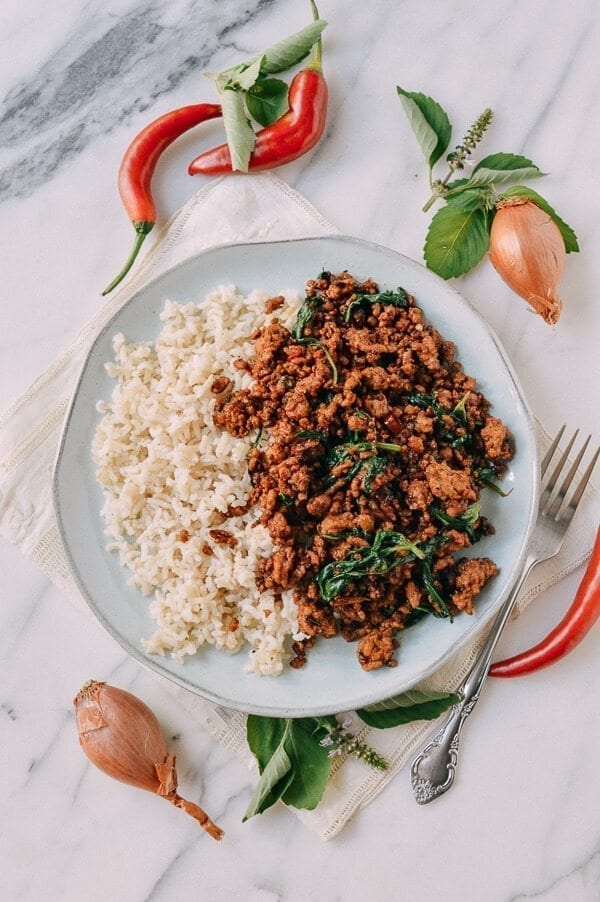

Thai Fried Minced Meat with Holy Basil (Pad Krapao)

Source: theworksoflife.com
Thai Stir Fried minced meat, a staple home meal
Ingredients:
tablespoons vegetable oil (2 tbsp)
shallots (thinly sliced) (2 pcs)
cloves garlic (sliced) (7 cloves)
Thai bird or holland chilies (de-seeded, if desired, and thinly sliced) (3 pcs)
Ground meat (450g)
Sugar (1 tsp)
Fish sauce (1 tbsp)
Thin/light soy sauce (1 tbsp)
Dark soy sauce (2 tbsp)
Oyster sauce (2 tsp)
Low sodium chicken broth or water (1/3 cup)
Holy basil leaves (about 1 1/2 cups packed)
Preparation Steps:
In a wok over medium high heat, add the oil, shallots and garlic, and fry for 3 minutes. Add the chilies and cook for another minute. Crank up the heat to high, and add the ground pork, breaking it up into small bits and allowing it to crisp up.
Add the sugar, fish sauce, soy sauce, dark soy sauce, and oyster sauce. Stir-fry for another minute and deglaze the pan with the broth or water. Because your pan is over high heat, the liquid should cook off very quickly. Add the basil, and stir-fry until wilted. Serve over rice.